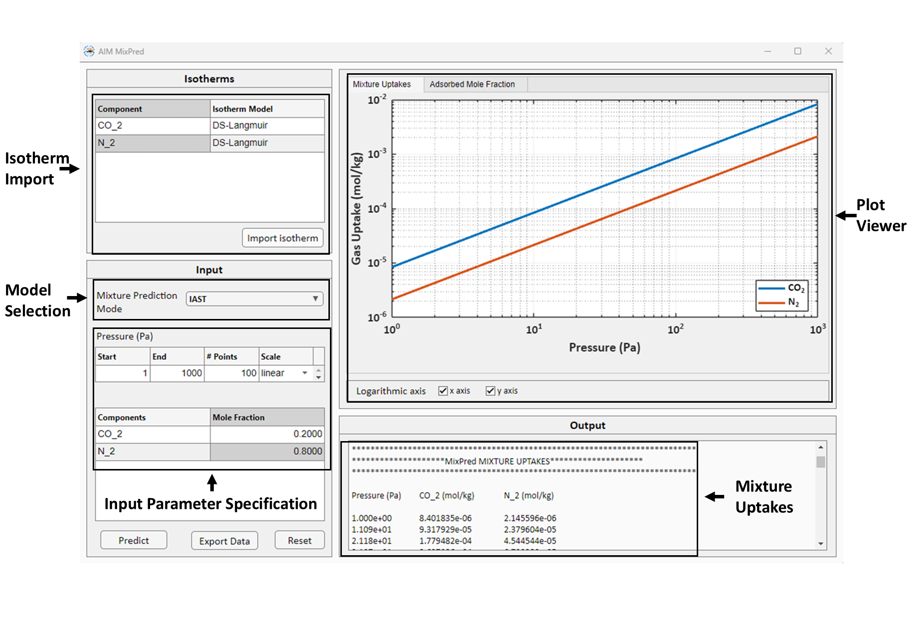

MixPred#
MixPred is the module for mixture isotherm prediction for the given pressure and composition. MixPred GUI is shown below:
{kind=link}

The isotherm fitting results from IsoFit and HeatFit can be directly loaded into MixPred module, and the user can specify the desired pressure range and mixture composition to calculate the mixture loadings.
Watch how to use MixPred here
MixPred has two models for mixture adsorption loading prediction which are as follows:
Extended Dual-site Langmuir Model (EDSL)
Ideal Adsorbed Solution Theory (IAST)
Extended Dual-site Langmuir Model (EDSL)#
The extended dual-site Langmuir (EDSL) model is a generalization of the Langmuir model for multi-component mixture adsorption. The model is expressed as,
where \(N\) is the number of components involved; \(q_{sat,1,i}\), \(q_{sat,2,i}\), \(b_{1,i}\), \(b_{2,i}\), and \(P_{i}\) are the single or pure component Langmuir isotherm parameters and partial pressure of component \(i\), respectively. The pure component Langmuir isotherm parameters for individual components can be obtained by fitting Langmuir isotherm model to the pure component isotherm data for the given component using either IsoFit or HeatFit. Note that the EDSL model is thermodynamically consistent only when the saturation capacities for each component are equal.
Note
The EDSL model in MixPred is applicable only when the isotherm of each individual component is described using the Langmuir isotherm model.
Ideal Adsorbed Solution Theory (IAST)#
IAST is a thermodynamic framework to calculate the mixture isotherms using pure component isotherm. The IAST is based on three fundamental assumptions:
The surface area of the adsorbent is equally accessible to all adsorbates.
The adsorbed phase is an ideal solution.
The adsorbent is homogeneous.
The solution of IAST involves nonlinear equations expressed through the reduced grand potential. For component \(i\), the reduced grand potential \(\psi_{i}^{*}\) is
where \(P_{i}^{*}\) is the fictitious pressure and \(q_{i}^{*}\) is the equilibrium loading of component \(i\) as obtained from pure component isotherm model. The fictitious pressure \(P_{i}^{*}\) is the pressure for component \(i\) at which it exerts the same reduced grand potential as the other components in the mixture. \(P_{i}^{*}\) is related to partial pressure \(P_{i}\) of component \(i\) given as,
where \(N\) is the number of adsorbing components in the mixture and \(x_{i}\) is the adsorbed mole fraction of component \(i\). Note that,
IAST states that adsorption equilibrium is achieved when the reduced grand potential of each component is same,
In MixPred, the IAST equations above are solved for \(2N\) unknowns, \(P_{i}^{*}\) and \(x_{i}\). The mixture adsorption loading for each component is then calculated using
Note
The IAST equations are highly non-linear and often extremely sensitive to the initial guess used. The solution can often be computationally expensive and time-consuming.